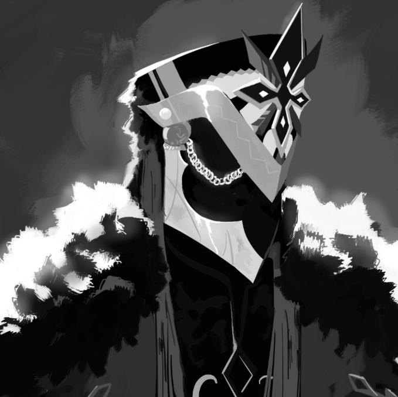
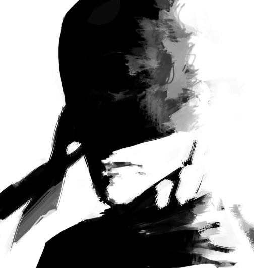
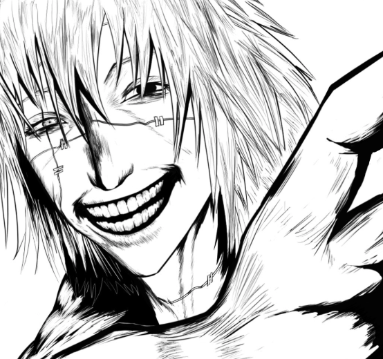
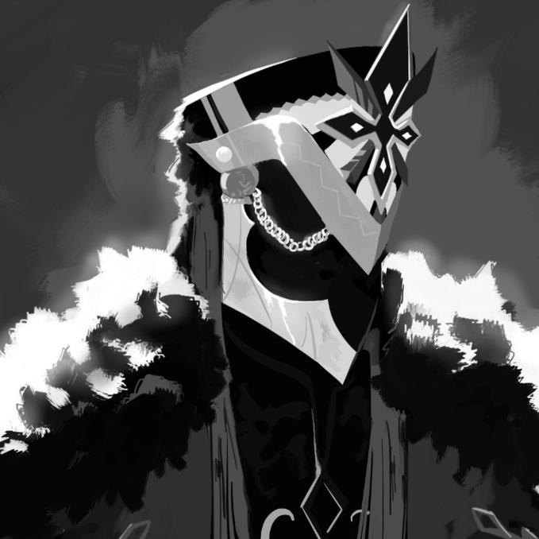
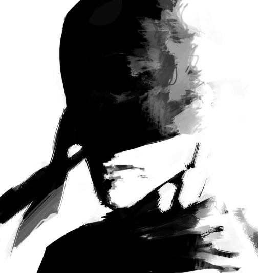
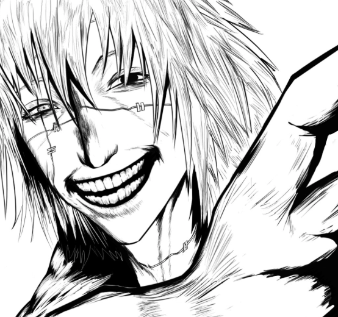
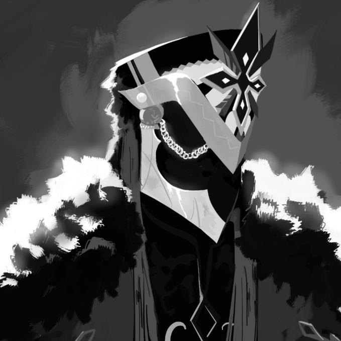
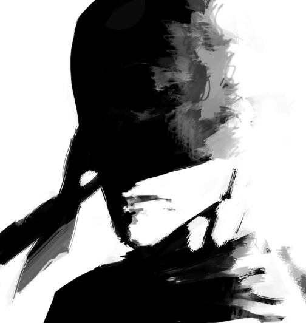
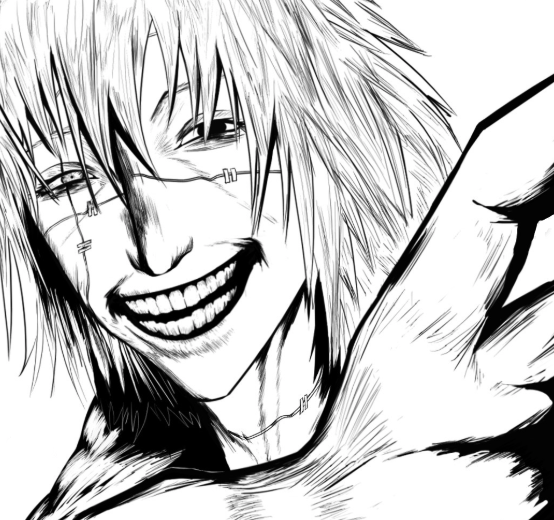

Discover my journey through art and design, when I went by my online Alias "Brxnes". Explore my works and tools that shaped my passion.
I have been drawing since birth, getting into digital illustration and graphic designing
in my teens. Now, with all
my years of experience, skills and expertise, I'm diving
into the professional world.
These are some of my personal favourites that I have drawn over the years



We all had to start somewhere.
These are some of my earlier works